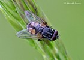
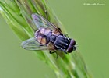
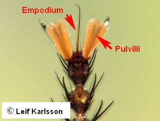

Key to families of Brachycera
1.
- Antennae usually long, with scape and pedicel and at least 6 homonomous flagellomeres or 10 to 35
flagellomeres pectinate or serrate flagellomeres.


Orthorrhapha
Xylophagidae
- Antennae shorter, scape and pedicel usually short, flagellomeres heteronornous: first flagellomere large, (sometimes annulated),
second and other flagellomeres in the form of a stylus or arista.


2
- Empodium in the form of pulvilli, i.e., 3 subequal pads below claws. Veins CuA2 and A1 separate,
or meeting at an acute angle close to wing margin.

Orthorrhapha, part
- Empodium bristle-like or not discernible, at most 2 well-developed pads below claws. Veins CuA2 and A1 variable.

3
- Antenna with heteronomous flagellomeres usually in the form of a stylus and less than 6 flagellomeres.

Orthorrhapha, part
- Antenna 3-segmented (scape, pedicel and flagellomer) with or without arista.
4
- Antenna usually with an elongated stylus or arista. Crossvein R-M situated well before middle
of wing or absent.
Eremoneura, part
- Antenna without stylus or arista.


5
- Antenna without stylus or arista, or sometimes bifid at tip with a very small, peg-like stylus.
Crossvein R-M at or beyond middle of wing.
Orthorrhapha
Asiloidea
Scenopinidae
- Vein M1 turned forwards to meet unforked R4+5. Wing usually with a vein-like fold or "vena spuria" between Rs and M, Wasp-mimicking genera).

Eremoneura
Cyclorrhapha
Syrphidae